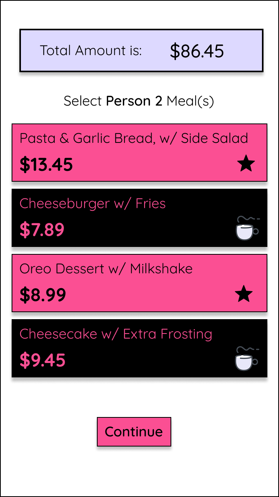
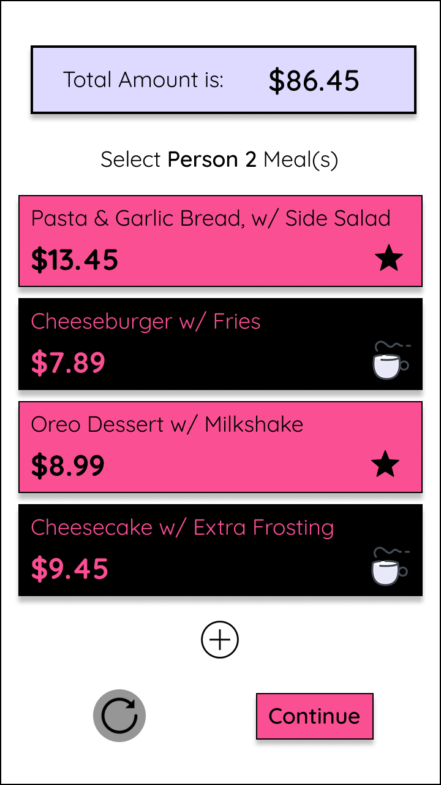

Split/R: Simplifying the Bill Splitting Experience
Rethinking how casual diners divide restaurant bills on a single phone. No math mistakes, no mandatory profiles, and done in under a minute.
Success Rate
5/5
Users finished taskSpeed Metric
45s
Average task timeOld Standard
3m+
Using normal calculatorsThe Dinner Table Math Problem
The end of a group dinner can easily turn awkward. Out come the native phone calculators, separate notes apps, and stressful calculations to guess tax and tip. Existing financial apps either require every person at the table to download the app, or they force you to create a shared profile just for a single meal.


Left: early Split/R sketches. Right: the awkward restaurant table moment that inspired the design.
User Interviews
I interviewed five group diners to learn where they run into trouble. Looking closely at user answers revealed a clear split between friends:
The Relaxed Card Holder
Comfortable with money. They prefer to pay the full bill upfront on their card and let friends pay them back whenever they can.
The Budget Tracker
Strict financial limits. They feel explicit anxiety when calculating their share at the table, especially in front of others.
🎯 An Honest Design Strategy
An interface cannot solve a user's personal budget constraints, but it can completely eliminate the math errors, social friction, and delay of dividing a bill.
Reviewing Alternatives
Why do existing apps fall short for quick, everyday group dinners?
| Existing Alternatives | What They Do Well | Where They Fail |
|---|---|---|
| Splitwise | Keeps track of running bills over weeks or months. | Too heavy for a single dinner. Everyone must install it. |
| Venmo / Zelle | Great for fast money transfers. | Requires external calculation; does not assign items. |
| Phone Calculator | Available on every single mobile phone. | Slow, prone to typing mistakes, and lacks tax/tip math. |
Low Fidelity Usability Testing & Revisions
Operating under a strict 5-day timeline forced me to test rough wireframes fast. Here are the clear friction points users experienced, and how the UI layout fixed them:
No Way to Fix Mistakes
Users felt trapped while assigning receipt item costs because any accidental tap forced them to start the app over from scratch.

Global Navigation Safety Net
Added instant reset icon button to the bottom of Assign Items screen and a back button at the top of the screens for clear navigation.

Forgotten Menu Items
Users realized they missed a shared appetizer or a side drink halfway through assigning costs, forcing them to quit their session.

On-The-Fly Item Addition
Placed a persistent floating "+" action button that lets users dynamically add an extra guest or line item at any point mid-calculation.

Final Design Visual Choices
The interface uses clear, high-contrast layouts to work reliably inside dimly lit restaurant spaces:
- Colors: Vibrant Pink (`#E91E63`) provides an energetic, modern tone that breaks away from boring green "banking" systems, mixed with rich dark grays for legibility.
- Typography: Bold geometric shapes for headers give the layout personality, while clean, readable body text handles numbers easily.